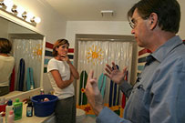

- Title Page
- Introduction
- The Milwaukee Journal Sentinel
- Investigative Reporting
- Early Stirrings
- Bisphenol A
- The Team
- Background Research
- Colburn Interview
- The Audit
- Industry View
- The EPA
- Into the Garret: Part 1
- A Difficult Meeting
- Into The Garret (Part 2): Breaking New Ground
- Art of Science Reporting
- Firsthand Analysis
- NTP Report
- What to write?
The Audit

Frederick vom Saal talks to Ellen Land Roder
© Milwaukee Journal Sentinel
As their story developed, all three reporters worried that it was too dry. Somehow, they needed to personalize the issue of endocrine disruptors, and demonstrate how it mattered to the reader. A friend of Rust’s suggested the team audit her home for dangers from plastics just the way a housing inspector might search for radon or lead. The team liked the idea. But first, they had to find an auditor. Kissinger and Spivak had interviewed University of Missouri-Columbia biology Professor Frederick vom Saal in June. For more than a decade, vom Saal had been an outspoken opponent of BPA and the chemical industry that produced it. His studies in peer-reviewed journals, as well as in the popular press, warned that bisphenol A was probably dangerous, even at low doses.
Bill Moyers Journal/Expose: “Chemicals in Our Food”
© PBS (May 23, 2008)
In their interview, vom Saal repeated most of his findings—which were some of the most radical in the scientific community. For example, his data indicated that the acceptable daily dose for the compound should be at least 25,000 times lower than the prevailing government standard of 50 micrograms per kilogram of body weight.[1] He also claimed—in a view the industry rejected vehemently—that 90 percent of BPA studies proved the chemical to be harmful; the 10 percent that suggested otherwise, he said, had been funded by the chemical industry.[2]
The team was aware that vom Saal’s views were provocative. They had not yet decided how to write about him. But meanwhile, they persuaded him to play a role in their story: home inspector. They asked vom Saal to visit an ordinary home to screen for hidden dangers from plastic products, and he agreed. Next, the reporters had to find a volunteer (using Rust’s friend seemed inappropriate). So they posted an advertisement on Milwaukeemoms.com, a website for local mothers with young children. Within days, Ellen Lang Roder, a mother of four from Greendale in southwest Wisconsin, volunteered her home.
On August 3, vom Saal surveyed Roder’s house room by room. He found plenty of cause for concern—from the plastic yellow ducks in the bathroom and purple bucket in the outdoor sandpit to the children’s plastic dolls and the food storage containers in the fridge. “Anything that goes into your child’s mouth is a factor for you to be concerned about,” vom Saal told Roder. But he also cautioned her against extreme measures.
No matter what you do, you cannot completely eliminate your exposure to these chemicals, because your world is absolutely full of them, and there’s no way to live in the world we live in and not be exposed to these chemicals.[3]
The audit was a success, at least from a reporting standpoint. It would add life to the team’s investigative story. Now they needed another element: authoritative voices from the chemical industry and its research organizations. Why did the industry find the chemicals safe? What methodology did it find persuasive? Spivak took the lead on making sure that they reached the right industry spokespeople. “We have got to bend over backwards and get their side, even if they don’t like us, even if they don’t want to talk to us,” Spivak explains. “We have to go beyond. The burden is on us.”
[1] http://www.ourstolenfuture.org/myths/vomsaal.htm. This government standard of 50 micrograms per kilogram of body weight would, for a 200-pound person, be equal to no more than one drop of BPA every five days. In vom Saal’s own house, there were no plastic bottles.
[2] Industry critics charged that vom Saal’s findings could not be replicated, and that his testing methods failed to mimic how humans absorb BPA. They called it misleading, for example, for vom Saal to inject mice with BPA. Since humans absorb BPA from drinking water and food, the critics argued that research scientists should also feed it to mice. Vom Saal defended his methodology, claiming that BPA was most dangerous to fetuses, which absorbed the chemical through their mothers' bodies rather than by eating it.
[3] Audio Slideshow: Home Audit for Chemicals, http://www.jsonline.com/story/index.aspx?id=688674